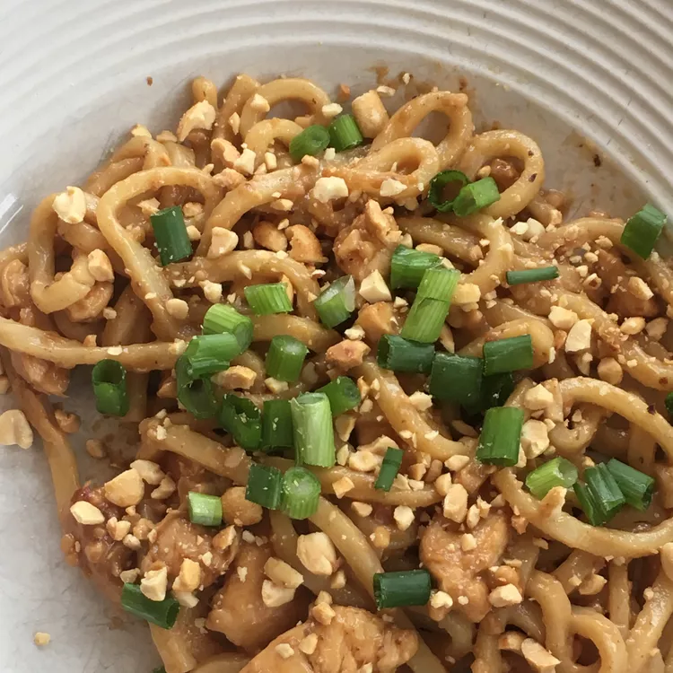

Udon Peanut Butter Noodles

Ingredients
- 1 (9 ounce) package dried udon noodles
- ½ cup chicken broth
- 3 tablespoons soy sauce
- 3 tablespoons peanut butter
- 3 cloves garlic, minced
- 2 teaspoons chili oil
- 1 ½ tablespoons minced fresh ginger
- 1 ½ tablespoons honey
- 1 whole rotisserie chicken, skinned and boned, meat pulled into large chunks
- 1 red bell pepper, thinly sliced
- ¼ cup green onions, chopped
- ¼ cup chopped peanuts
- ¼ cup chopped fresh cilantro
Steps
- Bring a large pot with lightly salted water to a boil. Cook udon in boiling water, stirring occasionally, until noodles are tender yet firm to the bite, 10 to 12 minutes. Drain; return to the pot.
- While noodles cooking, whisk chicken broth, soy sauce, peanut butter, garlic, chili oil, ginger, and honey in a saucepan over medium-high heat. Bring to a boil, whisking until peanut butter melted; pour over noodles. Stir in chicken and bell pepper; toss until noodles are evenly coated in sauce. Sprinkle with green onions, chopped peanuts, and cilantro to serve.
Home